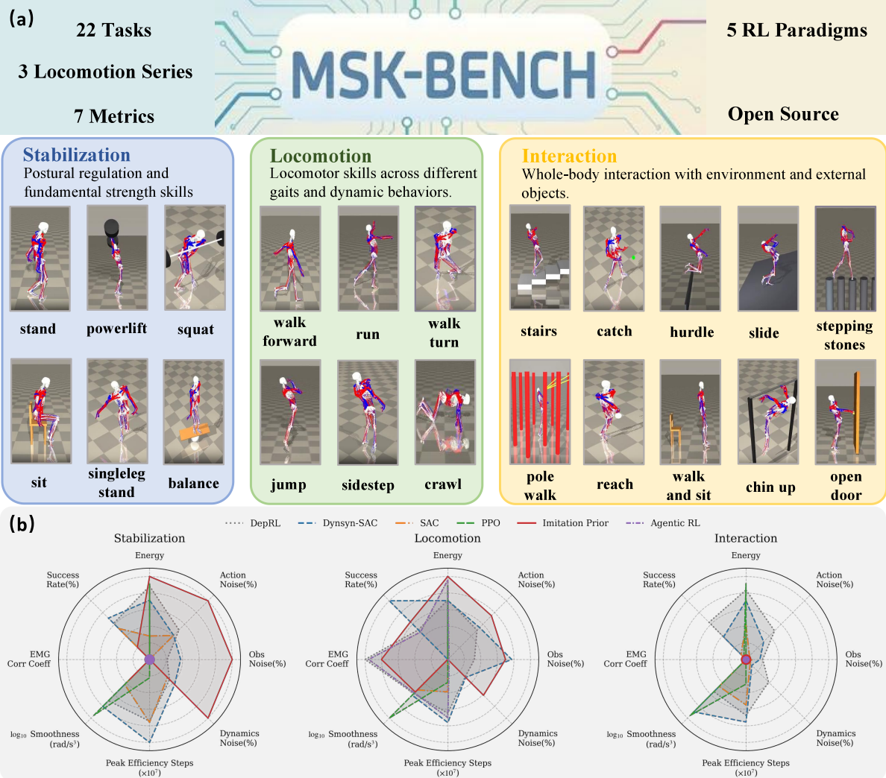
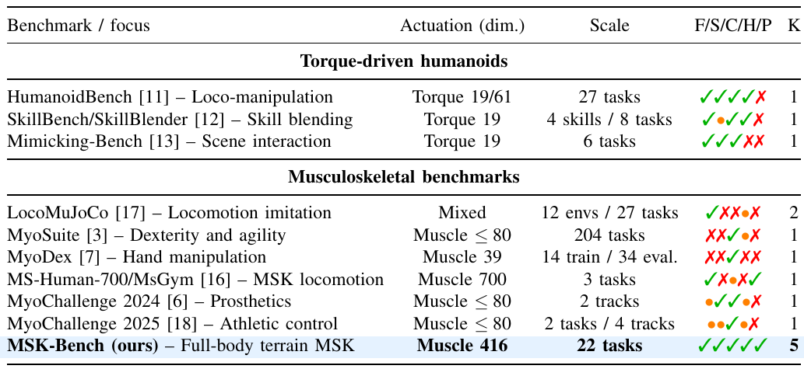
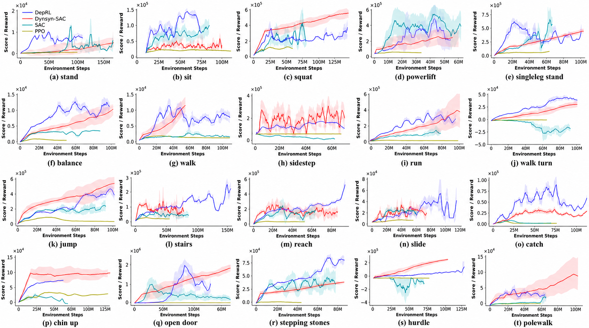
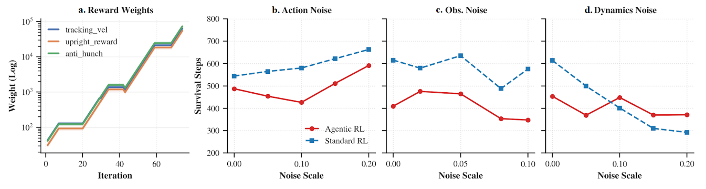
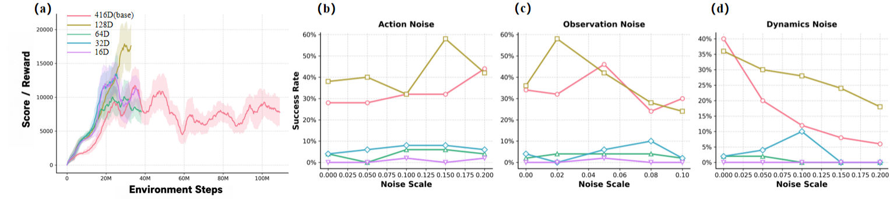
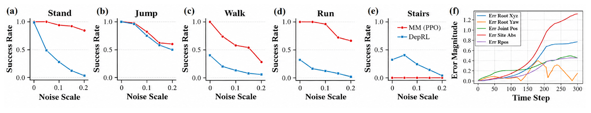
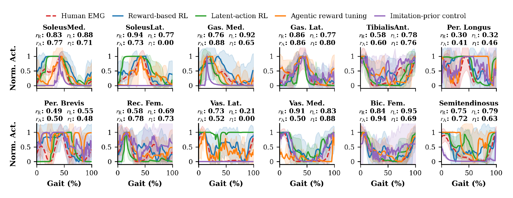
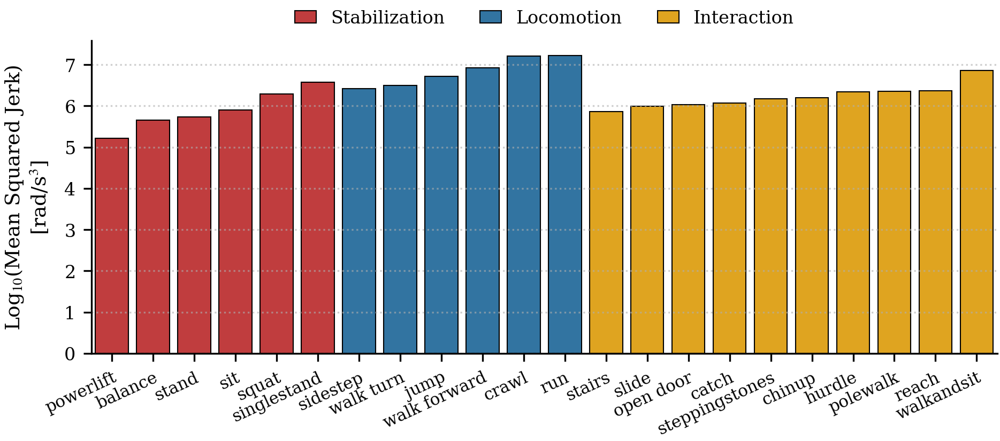
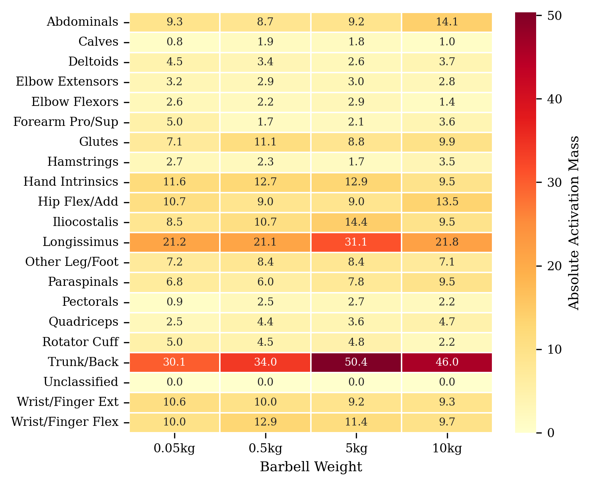
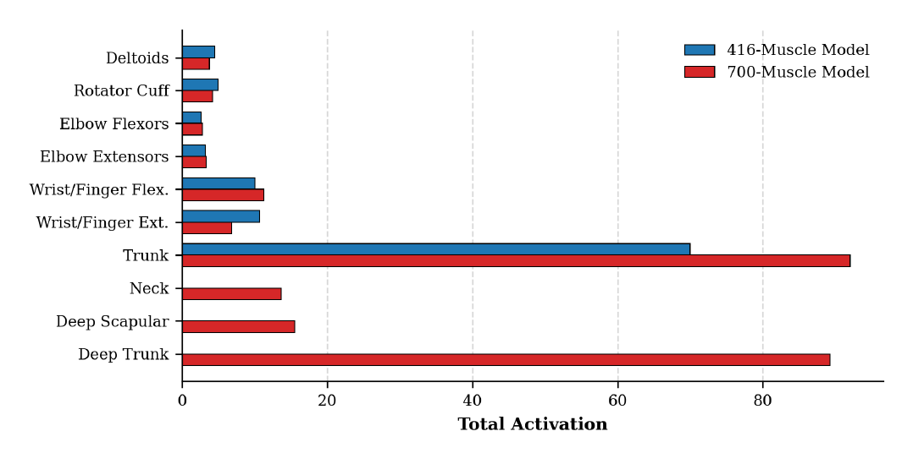

Full-body muscle-actuated humanoid control benchmark
MSK-Bench: Benchmarking Full-Body Musculoskeletal Motor Control Across Tasks, Learning Paradigms, and Physiological Metrics MSK-Bench: Benchmarking Full-Body Musculoskeletal Motor Control Across Tasks, Learning Paradigms, and Physiological Metrics
416muscles in the shared embodiment
22full-body motor tasks
3task families
5learning paradigms
7metric families
Abstract
How much does success on a locomotion task tell us about a full-body musculoskeletal controller? We introduce MSK-Bench to evaluate both the breadth of muscle-actuated control and the muscle activity underlying behavior. The benchmark contains 22 tasks spanning stabilization, locomotion, and contact-rich interaction on one 416-muscle full-body embodiment. Four reward-based algorithms share the full-suite comparison, while targeted studies span five control paradigms. Seven metric families distinguish task success, perturbation robustness, and physiological diagnostics, including human EMG-envelope comparisons for walking, running, and stairs. Two findings show what a success-only leaderboard misses. First, the average-success leader is not the coverage leader: DynSyn-SAC achieves 52.00% mean success but nonzero success on 16 of 22 tasks, versus DepRL's 48.36% and 22 of 22. Their ordering also reverses between locomotion and interaction. These success rates retain the complete noisy training environment. A targeted diagnostic then identifies stairs as a boundary of MuscleMimic's robustness advantage under dynamics perturbations, motivating a combined adaptation pipeline. Second, the largest success gain is not the largest EMG gain: stair success rises from 0% to 100%, with waveform correlation changing from 0.51 to 0.52; running success rises from 90% to 100%, with correlation increasing from 0.43 to 0.77. These descriptive comparisons concern normalized waveforms, not overall biological realism. MSK-Bench thus distinguishes high average performance from broad task coverage, and task recovery from improved agreement with human muscle activity.


Task Families
From postural regulation to contact-rich environmental interaction.
The average-success leader does not have the broadest task coverage.
DynSyn-SAC reaches 52.00% mean success, compared with 48.36% for DepRL, but has nonzero success on 16 of 22 tasks rather than all 22. The ordering reverses by task family: locomotion favors DynSyn-SAC (81.33% versus 41.33%), while interaction favors DepRL (51.40% versus 31.20%). Coverage counts observed nonzero success, not reliable mastery. These are separately task-trained policies, not one controller tested for zero-shot transfer.

DepRL curves highlighted; task videos above are grouped by DepRL.


Stairs expose a boundary of the evaluated motion prior.
Under the evaluated dynamics perturbations, MuscleMimic performs better than DepRL on stand, jump, walk, and run, but worse on stairs. During stair failure, absolute-site error rises from 0.35 to 1.31 and root-XYZ error from 0.25 to 0.77 between steps 150 and 300. The traces document divergence from the reference. Contact and timing mismatch is a possible explanation, not an established cause. This diagnostic motivates the combined adaptation study.

The largest success gain is not the largest EMG gain.
Stair success rises from 0% to 100%, while mean EMG-envelope correlation changes from 0.51 to 0.52. Running success rises from 90% to 100%, while correlation increases from 0.43 to 0.77. Thus, task recovery and improved waveform agreement are different outcomes. Correlations compare normalized, phase-aligned waveforms, not absolute activation or overall biological realism. Failed and successful policies may cover different portions of a behavior.




Residual Adaptation
A combined adaptation pipeline over a frozen motion prior.
MuscleMimic
Residual RL (Ours)
Anonymous supplementary material
Protocols, detailed results, and technical appendix.
The project demonstrations above and the technical material below form one review package. The main paper is self-contained; these resources provide additional detail, not new experiments.
Read technical appendix (24 pages) Detailed reading guide
Evaluation protocol
Training-environment SR: evaluation restores the complete training environment, including native noise. It is not a noiseless test. Perturbation robustness: separate action, observation, and muscle-force-gain sweeps use the grids documented in the appendix. Zero on a sweep axis is not the definition of training-environment SR.
Action and dynamics scales: 0, 0.05, 0.10, 0.15, 0.20. Observation scales: 0, 0.02, 0.05, 0.08, 0.10. Robustness area is the trapezoidal integral divided by the sweep range, averaged equally over 22 tasks and three perturbation types. Rankings are descriptive point estimates, not claims of statistical significance.
Full-suite comparison
| Method | All 22 SR (%) | Stabilization (6) | Locomotion (6) | Interaction (10) | Robustness area | SR > 0 |
|---|---|---|---|---|---|---|
| DynSyn-SAC | 52.00 | 57.33 | 81.33 | 31.20 | 41.59 | 16/22 |
| DepRL | 48.36 | 50.33 | 41.33 | 51.40 | 43.67 | 22/22 |
| SAC | 12.82 | 42.33 | 0.00 | 2.80 | 11.37 | 4/22 |
| PPO | 3.36 | 0.00 | 0.00 | 7.40 | 3.14 | 1/22 |
Task recovery and EMG agreement
| Task | MM SR (%) | Adapted SR (%) | MM EMG r | Adapted EMG r |
|---|---|---|---|---|
| Walking | 100 | 100 | 0.71 / 0.69 / 0.63 | 0.75 / 0.80 / 0.67 |
| Running | 90 | 100 | 0.43 | 0.77 |
| Stairs | 0 | 100 | 0.51 | 0.52 |
EMG envelopes use 101 samples per cycle, per-muscle min-max normalization, cycle averaging, and a cyclic shift that maximizes Pearson correlation. This measures waveform shape after amplitude and phase alignment. It does not retain absolute amplitude or phase, and a waveform score alone does not certify task completion.
Where to find the details
- Appendix A: task definitions, rewards, observations, initialization, and termination criteria.
- Appendices B-D: seven metric families, study coverage, task-wise tables, and aggregation.
- Appendices H-J: reward tuning, latent-action representation, and EMG processing.
- Appendices K-M: muscle-family grouping, load study, and the combined residual/reward/timing adaptation.
Code and checkpoints are not included in this release. The videos illustrate selected rollouts and do not replace the reported evaluation tables.